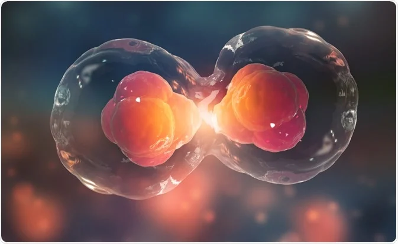

Control-C And Control-V
Cell division is the process by which a parent cell divides into two daughter cells. Cell division usually occurs as part of a larger cell cycle in which the cell grows and replicates its chromosome before dividing.

cell division is the process by which living cells multiply from one cell to two. The cells before division are called mother cells, and the new cells formed after division are called daughter cells. It usually consists of two steps: nuclear division and cytoplasmic division. During nuclear division, mother cells pass genetic material to daughter cells. In unicellular organisms, cell division is the reproduction of the individual, while in multicellular organisms, cell division is the basis of individual growth, development and reproduction. It mainly causes cell division, induces bud formation and promotes bud growth. In tissue-cultured tobacco pulp or stem segments, cytokinin can redivide myeloid cells that no longer have the ability to divide.

"Clone" means asexual reproduction, that is, a pure cell line formed by the division and reproduction of the same ancestral cell, and each cell in this cell line is genetically identical to each other. Animal cloning means that through asexual reproduction, a cell produces an animal with the same genetic traits as the parent, and the shape is very similar. With the development of animal cloning research, cloning technology will be widely used in the fields of medicine, animal husbandry and endangered animal protection.